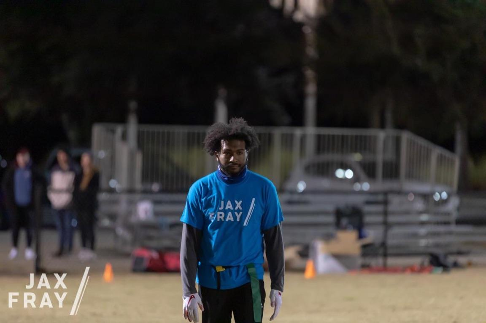

Jax Fray
Jax Fray is something i do in my free time, its an organzation for adults to play various sport together. I join because i wanted to be social, and i have going to the gym. The league is great and ive met alot of new people. I've been playing for 3 years now but it felt like a week honestly. I recommend it everyone i met, flag football is my cup of tea but they have a huge variety.
Click the football above to join the team
Dog Walker
I started dog walker when i was a junior in highschool, at first it was just a way to make money when i wasnt in school. I started to depend on these animal as much as they depended on me, i just love the felling you get when a dog is so excited to see you that they cant control their body. These are 3 of my favorite dog, Shea and Gerogia are the dogs on the left, Snickers is the one on the right.